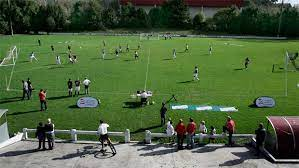

Curiosidades sobre esportes – futebol
Entre tragédias e eventos divertidos, as curiosidades futebolísticas oferecem um prato cheio para seu papo com os amigos.
- O Brasil é o único país presente em todas as Copas do Mundo O Brasil e o único país que esteve presente em todas as edições da Copa do Mundo. O evento existe desde 1930 e, desde o início, nenhum outro país esteve em todas as edições. Seja por não se classificarem, ou por outras razões, como políticas, outras nações têm, pelo menos, uma falta.
- O cartão vermelho mais rápido da história O ex-jogador britânico Lee Todd, em outubro de 2000, tomou o cartão vermelho mais rápido da história do futebol. O zagueiro, com a camisa do Cross Farm Park Celtic, disse um palavrão ao juiz assim que o jogo começou. Ele se assustou com o som do apito, por estar muito perto do árbitro e, em resumo, foi expulso com pouquíssimos segundos de jogo, por casa da boca suja.
- Equipe inteira morre em campo… e a outra fica ilesa Este bizarro e triste caso aconteceu em 1998. Um jogo na República Democrática do Congo acabou de forma trágica. De um lado do campo, o time Bena Tshadi, do outro, o Basanga. Durante o jogo, um raio caiu no campo e todos os 11 jogadores do Bena Tshadi morreram. Mas, do outro lado, todos os 11 do Basanga saíram ilesos. O incidente fez ser discutido até a possibilidade de feitiçaria.
- Futebol com três times em campo, em vez de dois  Lá na década de 1950, um artista da Dinamarca, chamado Asger Jorn desenvolveu um campo de futebol com três lados, em vez de dois. Nessa modalidade, venceria o time que levasse menos gol. A ideia era diminuir a violência no esporte, pois a foco passava a ver a defesa, e não o ataque. Por incrível que pareça, até hoje há jogos oficiais de futebol com três lados.
- Recorde mundial de gols… contra Na liga de Madagascar, foi estabelecido um recorde praticamente impossível de ser quebrado. A equipe SO Emyrne marcou 149 gols contra! Calma, mas não foi a falta de habilidade dos jogadores que resultou no vergonhoso resultado. No jogo anterior, uma decisão do juiz teria custado o campeonato ao time. Para protestar, quando pegaram o campeão, ficaram o jogo todo marcando gols contra a própria rede.